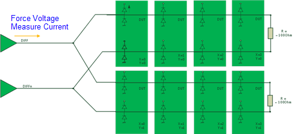
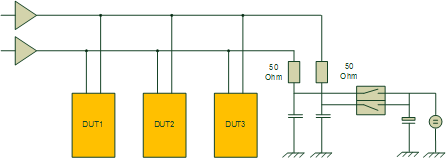

SharedLeakageParallel test method
The SharedLeakageParallel test method supports parallel leakage testing in a shared-driver environment. It can test shared pins which are terminated by a common DPS, non-shared, and cross-terminated pins in one pass.
The SharedLeakageParallel test method is part of the libMTP_SolutionTools.so library.
For information when to use this test method and when to use SharedLeakage test method, see SharedLeakage test method.
If you require greater control over test details than this test method offers, you can also develop your own shared leakage parallel test method with either the SHARED_LEAKAGE_PARALLEL_TEST API, or the MTP_LEAKAGE_TASK API. For the detailed differences between the three methodologies, see MTP_LEAKAGE_TASK.
Test methodology
The test method uses this algorithm to check the DUT:
- It connects all power supplies. The power supply‘s DPS‘ are left configured as specified in the primaries.
- If there is a utility control block in the sharing configuration file, it executes the leakage command to disconnect the shared lines from the termination supplies.
- It uses the PPMU to precharge and waits for the precharge interval.
- If shared pins are tested: It automatically sets the precharge voltage to the force voltage and pauses for the precharge time.
- If non-shared and cross-terminated pins are tested, manually precharge these pins when needed by setting the "PPMU Precharge", "Precharge Voltage", and "Precharge Time" parameters.
- It connects the PPMUs of the pins to be measured to the DUT and forces the specified force voltage.
- After the specified settling time has passed, it measures the leakage current on each pin.
All pins (shared but terminated by a common DPS, non-shared, cross-terminated) are measured in
parallel in a single pass.

- If the leakage command was executed in step 3, execute the default command of the utility control section to reset the utility lines to their default states and reconnect them to the termination DPS.
All pins and sites are measured in a single pass.

Syntax
The syntaxes are described in SharedLeakageParallel syntax.
Utility control
The keyword for specifying the utility line settings for SharedLeakageParallel in the utility control section of the sharing configuration file is leakage.
For information on the syntax, see Sharing configuration file.
Functional changes
- Introduced in MTP 3.0.1
- MTP 3.1.3: The SHARED_LEAKAGE_PARALLEL_TEST API is introduced to develop a customized test method.
- MTP 3.1.5: The non-shared and cross-terminated pins can be precharged before measuring leakage current.
- MTP 3.1.5: Added new API: MTP_LEAKAGE_TASK.